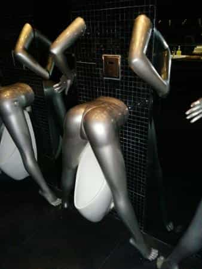

Occasionally I write about East Asia here at ROK, and after having spenth about a month in South Korea, Japan, Vietnam and other locations, I have additional insights and information to share.
Since Vietnam, while being a rather interesting emerging market, has almost completely been ignored on these pages, I will specifically look into America’s former arch enemy and what it may or may not offer in regard to travel, women, and similar phenomena. Here are my four major observations.
1. Materially and culturally it is somewhere between the Philippines and Taiwan
The average income level in Vietnam is actually lower compared to the Philippines. On the other hand, Vietnam has less of the ultra-poor slums and more people clustered somewhere in the middle. After all, most Vietnamese are peasants or low-skilled urban “entrepreneurs.” The communist government aims to avoid the worst living conditions for its people.
In the same spirit as China after the 1978 economic reforms, influenced by the advice from Lee Kuan Yew, however, Vietnam has slowly yet gradually implemented state-capitalist policies which have increased foreign investment, improved the country’s poor infrastructure, and led to higher economic growth.
Since economic development and culture often, although not necessarily go hand in hand, the Vietnamese have generally ended repulsive behaviors like feasting on dogs, cats, and even rodents (in the rural areas).
With the tropical climate, multiple motorcycles literally everywhere, a Chinese heritage, and some degree of modernity all taken into consideration, think of today’s Vietnam as somewhere between the Philippines (overall poor) and Taiwan (overall wealthy), both materially and culturally.
2. You will see Koreans everywhere
Koreans are not only making themselves globally well-known through K-pop soft power, but by being physically scattered throughout large parts of the world, including Vietnam. Pretty much every corner of major cities like Hanoi and Da Nang are affected by the omnipresence of Korean tourists. You will definitely see more Koreans than mainland Chinese, although South Korea has a population size of roughly 4% of that of China.
While I am generally sympathetic towards South Korea and its citizens and denizens, they can be a bit annoying with their many silly bathing suits and loudmouthed beta boys. On the other hand, you will see quite many young Korean women in tiny shorts, showcasing their long and slim legs. One Korean girl out of ten is attractive, while only one Vietnamese girl in ten is better-looking than the average Korean girl.
3. Most women are average or ugly
Most local girls do not look like this, I am afraid
That leads us to the next point. Unfortunately, most Vietnamese girls are not attractive. Lack of make-up and other “inauthentic” measures are some of the underlying reasons for this, but the facial features are perhaps an even more constraining factor. The typical Vietnamese girl is short, slim, and dull.
You will, of course, find cute girls in Vietnam, but not that many, and the stunning Oriental 9s and 10s are extremely few. For instance, I saw a typical postcard beauty outside a temple in Hanoi, who was dressed in a traditional costume, but she must have been one in a thousand.
4. Da Nang and Hoi An are the best places

#Metoo wanna take a leak there
Vietnam is geographically and population-wise a big country, and I have seen far from all of it. On the other hand, I have seen enough to draw the conclusion that Da Nang and Hoi Are likely the best places it has to offer, while you may skip Ho Chi Minh City (Saigon) and the smaller average cities. Hanoi is not that bad but not as nice as Da Nang and Hoi An.
In Da Nang you will find the most optimal balance between tradition and materially developed areas, and at the same time less of the overabundance of pollution and congestion so typical for the largest Asian cities. Typically, you will use GrabTaxi, a rented motorbike, and a little bit of walking as the main ways of transportation, and they are all cheap. Stay close to the beach area but make sure to take a ride with the extensive cable car in Bana Hills. Even the urinals inside the club New Phuong Dong Nightclub are shaped like a woman’s ass, and overall Vietnam has nothing of the #MeToo anti-sexist memes and behaviors.
The small and picturesque Hoi An, on the other hand, offers a retreat at some of its fairly cheap yet high-quality hotels, a clean and nice beach (An Bang Beach), and touristic yet somewhat authentic shops and restaurants.
Conclusion
Vietnam seems very far from a poosy paradise and not a place to dwell permanently. Instead it offers great tourism for a rather low amount of money. Especially if one picks the right spots and avoids those that are not worth the investment in time, energy, and money.
Read Next: How To Get Laid In South Korea